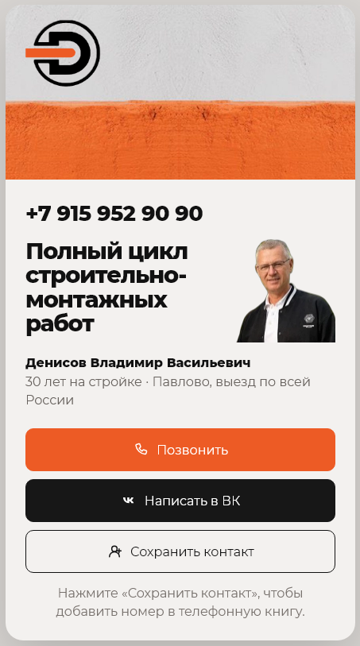
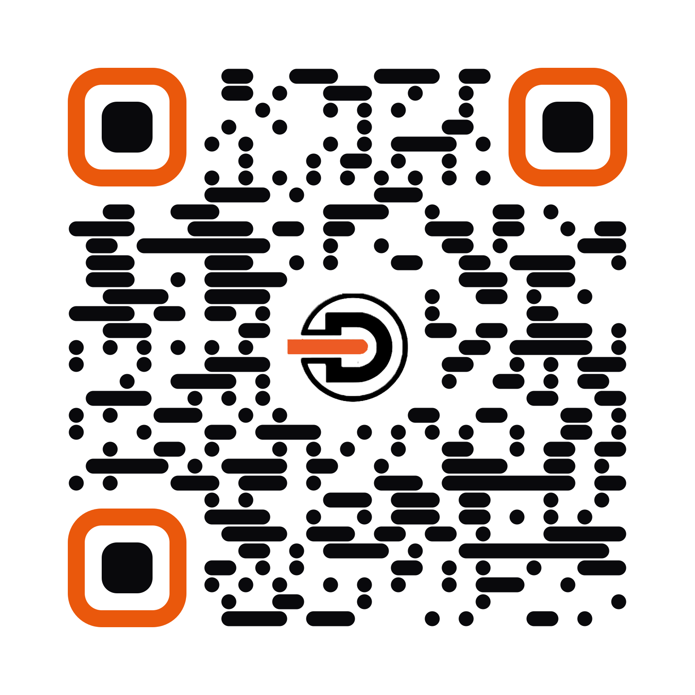
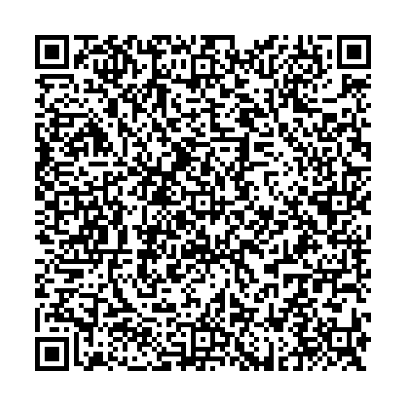

Живой кейс действующего бизнеса
Ваши контакты в телефоне клиента за 1 секунду по QR-коду
Посмотрите на работающую визитку строителя Денисова В.В. Никакой теории — ровно то же самое получит ваш бизнес за 1 день.

↑ Нажмите на экран телефона, чтобы открыть сайт, или наведите камеру на QR-код ниже ↓
Проверьте вживую прямо сейчас
Наведите камеру смартфона на этот QR-код — откроется реальная визитка Денисова В.В.

⚡ Мгновенный скан
Клиент наводит камеру на ваш QR-код (с визитки, спецовки или машины) — и визитка мгновенно открывается в браузере.
📥 Сохранение в 1 клик
Кнопка сохранения сразу переносит ваш телефон, имя и мессенджеры в записную книжку клиента без ошибок и опечаток.
🔄 Вечный QR-код
Поменялся номер или сфера услуг? Мы обновим данные на сервере за 5 минут. Менять сам QR-код на печати не нужно.
🛡️ Прямой контакт
Никаких комиссий агрегаторов и чужой рекламы. Человек общается напрямую с вами или вашей бригадой.
Хватит терять клиентов из-за клочков бумаги
Визитка для сохранения контакта
